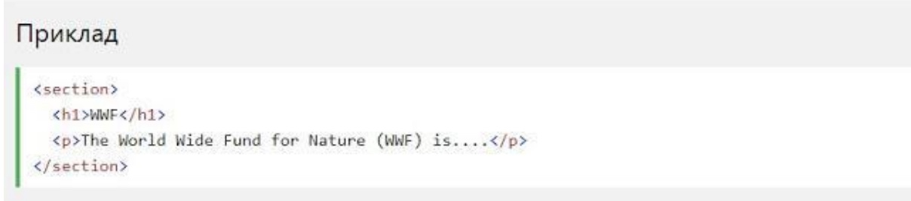
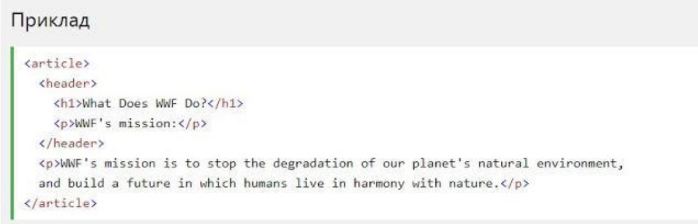

Підтримка браузерів
Семантичні елементи HTML5 підтримуються у всіх сучасних браузерах. Крім того, ви можете "навчити" старих браузерів, як обробляти "невідомі елементи". Прочитайте про це в підтримці браузера HTML5 .
Семантичні елементи HTML5 підтримуються у всіх сучасних браузерах. Крім того, ви можете "навчити" старих браузерів, як обробляти "невідомі елементи". Прочитайте про це в підтримці браузера HTML5 .
HTML5 пропонує нові семантичні елементи для визначення різних частин веб-сторінки:
Елемент <section>визначає розділ в документі. Згідно з документацією в3к'с HTML5: "розділ представляє собою тематичну угруповання контенту, зазвичай з заголовком". Домашня сторінка зазвичай може бути розділена на розділи для ознайомлення, змісту і контактної інформації.
Елемент <article>визначає незалежний, автономний вміст. Стаття повинна мати сенс самостійно, і вона повинна мати можливість читати його незалежно від іншої частини веб-сайту. Приклади того, де можна використовувати елемент <article>:
Елемент <header>задає заголовок для документа або розділу. Елемент <header>повинен використовуватися в якості контейнера для вступного змісту. В одному документі може бути кілька елементів <header>. У наступному прикладі визначається заголовок для статті:
